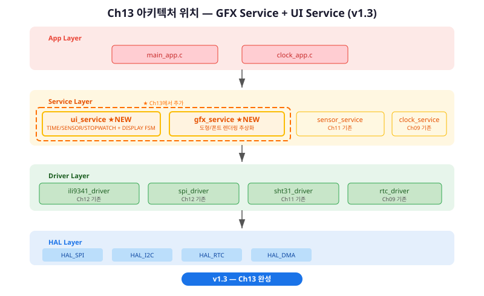
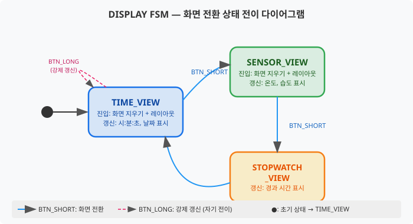
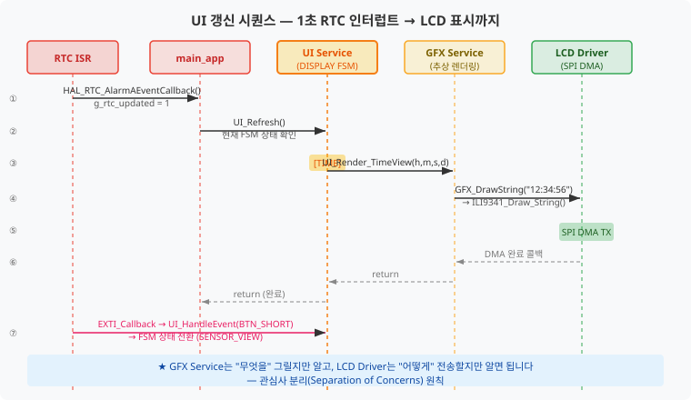
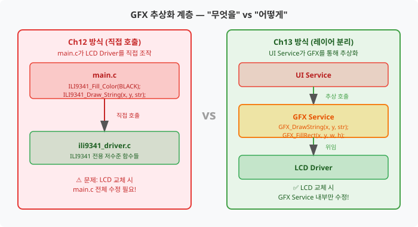
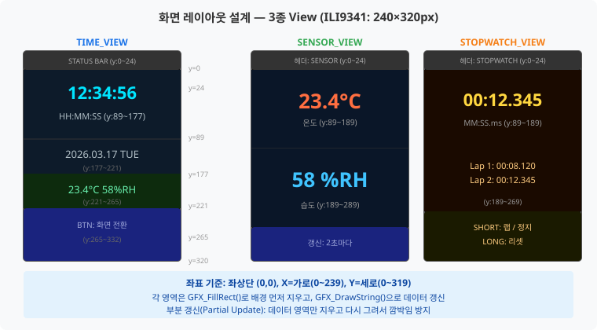
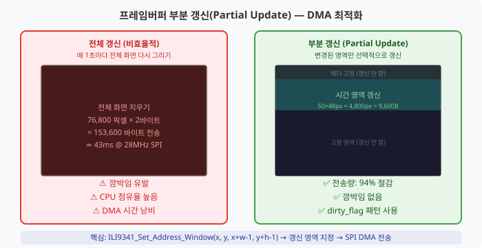
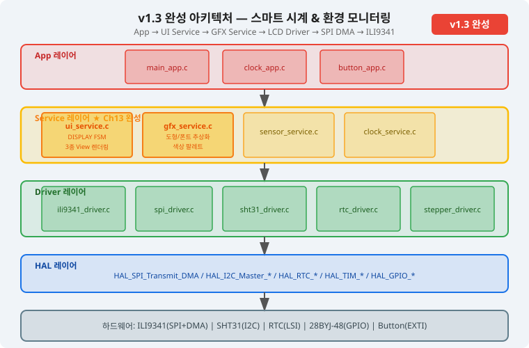

Ch12에서 초기화한 LCD 위에 GFX 추상화 레이어를 쌓고, 디지털 시각·온습도·스톱워치 세 화면을
버튼으로 전환하는 스마트 시계 UI를 완성합니다. 이 챕터가 끝나면 LCD가 비로소 "살아있는 UI"를 보여줍니다.
누적 기능: 디지털 시각 + 온습도 + 스톱워치 화면 구성 완성 (v1.3)
이 챕터의 아키텍처 위치
Ch12까지 완성한 LCD Driver(ILI9341) 위에 이번 챕터에서 두 개의 Service 레이어를 추가합니다.
GFX Service는 "무엇을 어디에 그릴지"를 추상화하는 레이어이고,
UI Service는 "어떤 화면을 언제 보여줄지"를 관리하는 레이어입니다.
이 두 레이어 덕분에 App 레이어는 UI_HandleEvent()와 UI_ProcessRefresh()만 호출하면 됩니다.

그림 13-1. v1.3 레이어 아키텍처 — Service 레이어에 GFX Service · UI Service 추가
인터페이스 설계
이 챕터에서 구현하는 Service 레이어의 공개 API입니다. App 레이어는 이 함수들만 호출합니다.
/* gfx_service.h — GFX Service 공개 인터페이스 */
void GFX_Init(void);
void GFX_DrawPixel(uint16_t x, uint16_t y, uint16_t color);
void GFX_FillRect(uint16_t x, uint16_t y, uint16_t w, uint16_t h, uint16_t color);
void GFX_FillScreen(uint16_t color);
void GFX_DrawLine(uint16_t x0, uint16_t y0, uint16_t x1, uint16_t y1, uint16_t color);
void GFX_DrawCircle(uint16_t cx, uint16_t cy, uint16_t r, uint16_t color);
void GFX_DrawChar(uint16_t x, uint16_t y, char c, uint16_t fg, uint16_t bg, uint8_t scale);
void GFX_DrawString(uint16_t x, uint16_t y, const char *str, uint16_t fg, uint16_t bg, uint8_t scale);
void GFX_DrawNumber(uint16_t x, uint16_t y, int32_t val, uint8_t digits, uint16_t fg, uint16_t bg, uint8_t scale);
/* ui_service.h — UI Service 공개 인터페이스 */
void UI_Init(void);
void UI_HandleEvent(UI_EventType_t event); /* FSM 이벤트 입력 */
UI_ViewType_t UI_GetCurrentView(void);
void UI_UpdateTimeData(const UI_TimeData_t *data);
void UI_UpdateSensorData(const UI_SensorData_t *data);
void UI_UpdateStopwatchData(const UI_StopwatchData_t *data);
void UI_RequestRefresh(void); /* ISR에서 플래그 설정 */
void UI_ProcessRefresh(void); /* 메인 루프에서 실제 렌더링 */
FSM 설계
DISPLAY FSM(유한 상태 머신, Finite State Machine)은 세 화면 상태와 두 종류의 버튼 이벤트로 구성됩니다.
짧은 누름(BTN_SHORT)은 다음 화면으로 전환하고, 긴 누름(BTN_LONG)은 현재 화면을 강제 재갱신합니다.

그림 13-2. DISPLAY FSM — TIME_VIEW / SENSOR_VIEW / STOPWATCH_VIEW 상태 전이
시퀀스 다이어그램
RTC 1초 인터럽트가 발생했을 때, UI 갱신이 어떤 경로로 LCD 화면에 도달하는지 계층별로 추적합니다.
각 레이어의 책임이 명확히 분리되어 있음을 확인하세요.

그림 13-3. UI 갱신 시퀀스 — RTC ISR → main_app → UI Service → GFX Service → LCD Driver → SPI DMA
학습 목표
이 챕터를 완료하면 다음을 할 수 있습니다.
[이해] GFX 추상화 레이어가 필요한 이유와 LCD Driver / GFX Service / UI App 3계층 분리 원칙을 설명할 수 있다.
[적용] 8×16 비트맵 폰트 렌더링 함수를 구현하고 디지털 시각·온습도·스톱워치를 ILI9341 LCD에 표시할 수 있다.
[적용] 테이블 기반 DISPLAY FSM을 구현하여 버튼 이벤트에 따른 세 화면 전환을 처리할 수 있다.
[분석] 프레임버퍼 전체 갱신과 부분 갱신(Partial Update)의 DMA 전송량 차이를 계산하고 최적화할 수 있다.
프로젝트 v1.3: 이 챕터 완료 후 ILI9341 LCD에 디지털 시각 · 온습도 · 스톱워치 세 화면이
버튼으로 전환되며 동작합니다. 스마트 시계의 UI가 완성됩니다.
1절. GFX 레이어 아키텍처 설계 원칙
Ch12에서 여러분은 ILI9341_Draw_String(), ILI9341_Fill_Color() 같은 함수를
직접 main.c에서 호출했습니다. 화면에 무언가가 표시되는 것은 훌륭하지만, 만약 지금 LCD 모델을
ST7789로 교체해야 한다면 어떻게 될까요? main.c 전체를 뒤져서 ILI9341_xxx를
모두 ST7789_xxx로 바꿔야 합니다. 이것은 유지보수의 악몽입니다.
GFX 레이어(그래픽 서비스, Graphics Service)는 이 문제를 해결합니다. 상위 레이어가 하드웨어에 종속된
함수를 직접 호출하지 않도록, "그래픽 추상화 계층"을 중간에 끼워 넣는 것입니다.
비유로 이해하기 — 레스토랑의 주방
웨이터(App 레이어)는 손님에게 "오늘의 메뉴: 디지털 시계"를 전달합니다.
요리사(GFX Service)는 "치킨을 굽는 방법"은 알지만, 어느 오븐(LCD 모델)을 사용하는지는 신경 쓰지 않습니다.
주방 설비(LCD Driver)만 오븐을 알고, 실제 불을 조작합니다.
※ 이 비유의 한계: 실제 소프트웨어에서는 GFX Service도 LCD Driver의 API 규약(인터페이스)에 의존합니다.
완전히 독립적이지는 않지만, 의존 방향이 단방향(위→아래)이라는 점이 핵심입니다.

그림 13-4. Ch12(직접 호출) vs Ch13(GFX 추상화) 아키텍처 비교
GFX Service가 해결하는 두 가지 문제
문제 1 — 하드웨어 종속성: ILI9341_Draw_String()은 ILI9341 전용 함수입니다.
GFX Service를 사용하면 GFX_DrawString()만 사용하고, 내부에서 어느 LCD를 쓰는지는
gfx_service.c 한 파일에 집중됩니다.
문제 2 — 기능 분산: Ch12의 ILI9341_Draw_String()은 기능이 제한적입니다.
GFX Service에서 스케일 배율(scale), 색상 팔레트 매크로, 폰트 렌더링 엔진을 공통으로 제공하므로,
UI 코드가 훨씬 간결해집니다.
레이어 경계 규칙
이 프로젝트에서는 다음 규칙을 철저히 지킵니다:
gfx_service.c만 ili9341_driver.h를 include할 수 있습니다.
ui_service.c는 gfx_service.h만 include합니다.
main_app.c는 ui_service.h만 include합니다.
이 규칙을 "단방향 의존(One-way Dependency)" 원칙이라고 합니다. 위 레이어가 아래 레이어를 호출하지,
아래 레이어가 위를 올려다보지 않습니다.
LCD에 문자를 표시하는 것은 생각보다 저수준(low-level) 작업입니다. TFT LCD에는 "문자 전송" 명령이 없습니다.
오직 "이 좌표에 이 색상의 픽셀을 그려라"만 가능합니다. 따라서 글자 하나를 그리려면 수십 개의 픽셀을
직접 그려야 합니다. 이것이 비트맵 폰트(Bitmap Font) 렌더링입니다.
비유로 이해하기 — 모눈종이 도장
비트맵 폰트는 8×16 칸짜리 모눈종이 도장과 같습니다. 각 칸에 "칠해라(1)" 또는 "비워라(0)"가
미리 인쇄되어 있고, 이 도장을 LCD 특정 위치에 찍으면 글자가 됩니다.
배율(scale) 파라미터는 도장 크기를 2배, 3배로 확대하는 것입니다.
※ 이 비유의 한계: 실제로는 도장을 찍는 것이 아니라 비트 연산으로 픽셀 하나씩 처리합니다.
또한 안티앨리어싱(Anti-aliasing, 계단 현상 완화)은 이 교재 범위를 벗어납니다.
비트맵 폰트 데이터 구조
8×16 폰트는 글자 하나가 16바이트로 표현됩니다. 각 바이트가 한 행(row)이고,
바이트의 각 비트가 한 픽셀입니다. MSB(최상위 비트)가 왼쪽 픽셀, LSB(최하위 비트)가 오른쪽 픽셀입니다.
그림 13-5. 8×16 비트맵 폰트 — 문자 'A'의 픽셀 그리드와 바이트 배열 표현
예를 들어 문자 'A'의 행4(가로 획)는 0x7F로 표현됩니다.
0x7F = 0111_1111이므로 비트 0(MSB)이 0(빈 픽셀), 비트 1~7이 1(채운 픽셀)입니다.
이렇게 하면 좌측 한 픽셀이 빈 상태로 가로 획이 그려집니다.
/* gfx_service.c — 단일 문자 렌더링 핵심 알고리즘 */
void GFX_DrawChar(uint16_t x, uint16_t y, char c,
uint16_t fg, uint16_t bg, uint8_t scale)
{
uint8_t row, col;
uint8_t font_byte;
/* ASCII 범위 검사: 0x20(' ') ~ 0x7E('~') */
if (c < 0x20 || c > 0x7E) {
c = '?'; /* 지원 외 문자 대체 */
}
/* 폰트 테이블에서 해당 글리프(Glyph, 문자 모양) 로드 */
const uint8_t *glyph = s_font8x16[c - 0x20];
/* 16행 × 8열 순회 */
for (row = 0; row < 16; row++) {
font_byte = glyph[row]; /* 현재 행의 8픽셀 정보 */
for (col = 0; col < 8; col++) {
/* 0x80을 col만큼 우측 시프트 → 현재 열의 비트 마스크
* col=0: 0x80 (10000000) → 가장 왼쪽 픽셀
* col=1: 0x40 (01000000)
* col=3: 0x10 (00010000)
* col=7: 0x01 (00000001) → 가장 오른쪽 픽셀
*/
uint16_t pixel_color = (font_byte & (0x80 >> col)) ? fg : bg;
if (scale == 1) {
GFX_DrawPixel(x + col, y + row, pixel_color);
} else {
/* scale > 1: scale×scale 블록으로 픽셀 확대 */
GFX_FillRect(x + col * scale, y + row * scale,
scale, scale, pixel_color);
}
}
}
}
색상 팔레트 — RGB565 포맷
ILI9341은 RGB565(16비트 색상) 포맷을 사용합니다. 16비트 중 빨강(R) 5비트, 초록(G) 6비트,
파랑(B) 5비트로 색상을 표현합니다. 초록이 1비트 더 많은 이유는 인간의 눈이 초록에 더 민감하기 때문입니다.
세 개의 화면이 있습니다: 디지털 시각(TIME_VIEW), 온습도(SENSOR_VIEW), 스톱워치(STOPWATCH_VIEW).
각 화면은 ILI9341의 240×320 픽셀 공간에서 영역을 나눠 배치합니다.
레이아웃을 코드에 하드코딩하지 않고, 좌표 상수(Coordinate Constants)로 집중 관리하면
나중에 한 줄만 바꿔도 전체 레이아웃이 조정됩니다.
비유로 이해하기 — 신문 편집
신문 1면 편집자는 기사 내용이 정해지기 전에 먼저 "여기는 헤드라인, 여기는 사진, 여기는 본문"이라는
레이아웃 격자를 잡습니다. 좌표 상수가 바로 이 격자입니다. 내용(데이터)이 바뀌어도 격자(레이아웃)는 고정됩니다.
※ 이 비유의 한계: 신문은 픽셀 단위가 아닙니다. LCD에서는 정확한 픽셀 좌표가 필요하며,
off-by-one 오류(좌표 1 차이)가 시각적으로 바로 드러납니다.

그림 13-6. 화면 3종 레이아웃 설계도 — ILI9341 240×320px 기준 영역 분할
좌표 상수 정의 전략
좌표를 매직 넘버(Magic Number)로 코드에 직접 쓰면 유지보수가 어렵습니다.
예를 들어 GFX_DrawString(10, 89, ...)에서 '89'가 무엇을 뜻하는지 3개월 후에는
알 수 없습니다. 대신 이름 있는 상수를 사용합니다:
/* ui_service.c — 화면 레이아웃 좌표 상수 (한 곳에 집중 관리) */
/* TIME_VIEW 좌표 */
#define TV_HEADER_Y 0U /* 헤더 바 시작 Y */
#define TV_HEADER_H 24U /* 헤더 높이 */
#define TV_TIME_X 10U /* 시각 표시 X 좌표 */
#define TV_TIME_Y 89U /* 시각 표시 Y 좌표 */
#define TV_TIME_H 68U /* 시각 표시 영역 높이 */
#define TV_DATE_Y 177U /* 날짜 Y */
#define TV_DATE_H 44U /* 날짜 영역 높이 */
#define TV_MINI_TEMP_Y 221U /* 소형 온도 표시 Y */
#define TV_MINI_TEMP_H 44U
/* SENSOR_VIEW 좌표 */
#define SV_TEMP_VAL_Y 80U /* 온도 값 (대형) Y */
#define SV_TEMP_H 100U /* 온도 표시 영역 높이 */
#define SV_HUMI_VAL_Y 240U /* 습도 값 Y */
Ch08에서 스톱워치 FSM(IDLE / RUNNING / PAUSED / RESET)을 구현했던 것을 기억하시나요?
DISPLAY FSM은 같은 원리입니다. 다만 이번에는 테이블 기반 FSM(Table-driven FSM)을
사용합니다. 이 방식은 상태 전이 로직을 if-else 체인 대신 구조체 배열(테이블)로 표현하여
코드를 더 깔끔하고 확장하기 쉽게 만듭니다.
비유로 이해하기 — 지하철 노선도
지하철 노선도는 "현재 역 + 방향" → "다음 역"을 테이블로 정의한 FSM입니다.
2호선에서 "잠실 + 강남방향" → "잠실새내"처럼, DISPLAY FSM도
"TIME_VIEW + BTN_SHORT" → "SENSOR_VIEW"를 테이블에 명시합니다.
새 화면(역)을 추가할 때 테이블에 행 하나만 추가하면 됩니다.
※ 이 비유의 한계: 지하철은 동시에 여러 열차가 존재하지만, 이 FSM은 단일 활성 상태만 가집니다.
테이블 기반 FSM 구현
테이블 기반 FSM 코드에서 FSM_ActionFunc_t action은 함수 포인터(Function Pointer)입니다.
함수 포인터는 함수의 메모리 주소를 저장하는 변수로, 변수에 어떤 함수를 대입하느냐에 따라
실행되는 함수가 달라집니다. C언어에서는 typedef void (*FSM_ActionFunc_t)(void);처럼 선언합니다.
FSM 테이블에 함수 포인터를 넣으면, 상태 전이 시 if-else 분기 없이 테이블에서 꺼낸 함수를 바로 호출할 수 있습니다.
이것이 테이블 기반 FSM의 핵심 기법입니다.
/* ui_service.c — 테이블 기반 FSM 전이 테이블 */
/* 전이 행 구조체 */
typedef struct {
UI_ViewType_t current_state;
UI_EventType_t event;
UI_ViewType_t next_state;
FSM_ActionFunc_t action; /* 진입 시 실행할 함수 포인터 */
} FSM_Transition_t;
/* FSM 전이 테이블 — 새 화면 추가 시 여기에 행만 추가 */
static const FSM_Transition_t s_fsm_table[] = {
/* 현재 상태 | 이벤트 | 다음 상태 | 액션 */
{ UI_VIEW_TIME, UI_EVENT_BTN_SHORT, UI_VIEW_SENSOR, action_enter_sensor_view },
{ UI_VIEW_SENSOR, UI_EVENT_BTN_SHORT, UI_VIEW_STOPWATCH, action_enter_stopwatch_view },
{ UI_VIEW_STOPWATCH, UI_EVENT_BTN_SHORT, UI_VIEW_TIME, action_enter_time_view },
{ UI_VIEW_TIME, UI_EVENT_BTN_LONG, UI_VIEW_TIME, action_force_refresh },
{ UI_VIEW_SENSOR, UI_EVENT_BTN_LONG, UI_VIEW_SENSOR, action_force_refresh },
{ UI_VIEW_STOPWATCH, UI_EVENT_BTN_LONG, UI_VIEW_STOPWATCH, action_force_refresh },
{ UI_VIEW_TIME, UI_EVENT_TICK, UI_VIEW_TIME, action_partial_refresh },
{ UI_VIEW_SENSOR, UI_EVENT_TICK, UI_VIEW_SENSOR, action_partial_refresh },
{ UI_VIEW_STOPWATCH, UI_EVENT_TICK, UI_VIEW_STOPWATCH, action_partial_refresh },
};
/* FSM 이벤트 처리 함수 */
void UI_HandleEvent(UI_EventType_t event)
{
uint8_t i;
LOG_D("UI_HandleEvent: 상태=%d, 이벤트=%d", s_current_view, event);
for (i = 0; i < (sizeof(s_fsm_table) / sizeof(s_fsm_table[0])); i++) {
if (s_fsm_table[i].current_state == s_current_view &&
s_fsm_table[i].event == event) {
s_current_view = s_fsm_table[i].next_state;
if (s_fsm_table[i].action != NULL) {
s_fsm_table[i].action();
}
LOG_D("UI_HandleEvent: 전이 완료 → 상태=%d", s_current_view);
return;
}
}
LOG_W("UI_HandleEvent: 처리 안 된 이벤트 (상태=%d, 이벤트=%d)",
s_current_view, event);
}
FSM 진입 액션 vs 1초 갱신 액션 분리
FSM에서 중요한 설계 결정이 있습니다: 배경 화면 지우기는 진입 액션에서 한 번만 하고,
데이터 갱신은 1초 TICK 이벤트에서 부분 갱신만 합니다.
진입 액션에서 전체 화면을 지우면 레이아웃을 다시 그리고, 이후에는 변경된 숫자 영역만 갱신합니다.
/* ui_service.c — 진입 액션과 부분 갱신 액션 분리 */
/* 진입 액션: 화면 전환 시 한 번만 실행 */
static void action_enter_time_view(void)
{
LOG_I("FSM: TIME_VIEW 진입");
GFX_FillScreen(TV_BG_COLOR); /* 전체 화면 지우기 */
draw_header(" SMART CLOCK "); /* 헤더 그리기 */
UI_Render_TimeView_Full(); /* 전체 레이아웃 초기화 */
}
/* 1초 TICK 부분 갱신: 데이터 영역만 갱신 */
static void action_partial_refresh(void)
{
switch (s_current_view) {
case UI_VIEW_TIME:
UI_Render_TimeView_Partial(); /* 시:분:초 영역만 갱신 */
break;
case UI_VIEW_SENSOR:
UI_Render_SensorView_Partial(); /* 온도+습도 영역만 갱신 */
break;
case UI_VIEW_STOPWATCH:
UI_Render_StopwatchView_Partial(); /* 경과 시간만 갱신 */
break;
default:
break;
}
}
메인 루프에서 버튼 이벤트 처리
/* main.c (또는 main_app.c) — 이벤트 폴링 패턴 */
/* EXTI 콜백: 버튼 누름 감지 (ISR) */
void HAL_GPIO_EXTI_Callback(uint16_t GPIO_Pin)
{
if (GPIO_Pin == GPIO_PIN_13) { /* NUCLEO User Button: PC13 */
g_btn_short_pressed = 1U; /* ISR에서는 플래그만 설정 */
}
}
/* RTC 1초 알람 콜백 (ISR) */
void HAL_RTC_AlarmAEventCallback(RTC_HandleTypeDef *hrtc)
{
(void)hrtc;
g_rtc_1sec_tick = 1U;
UI_RequestRefresh(); /* 갱신 요청 플래그 설정 */
}
/* 메인 루프 (main.c while(1) 내부) */
while (1) {
/* 버튼 이벤트 처리 */
if (g_btn_short_pressed != 0U) {
g_btn_short_pressed = 0U;
UI_HandleEvent(UI_EVENT_BTN_SHORT);
}
/* RTC 1초 틱 처리 */
if (g_rtc_1sec_tick != 0U) {
g_rtc_1sec_tick = 0U;
/* RTC에서 현재 시각 읽기 */
RTC_GetTime(&htc_time);
UI_TimeData_t td = {
.hour = htc_time.hours, .min = htc_time.minutes,
.sec = htc_time.seconds
};
UI_UpdateTimeData(&td);
/* FSM에 TICK 이벤트 전달 → 부분 갱신 */
UI_HandleEvent(UI_EVENT_TICK);
}
}
5절. 프레임버퍼 DMA 최적화
5절은 심화 내용입니다. 4절까지의 내용만으로도 동작하는 UI를 만들 수 있습니다.
이 절은 "왜 전체 갱신이 느린가", "어떻게 최적화하는가"를 이해하고 싶은 분을 위한 내용입니다.
시간이 부족하다면 이 절을 건너뛰고 실습으로 바로 넘어가도 됩니다.
전체 갱신의 문제점 — 숫자로 확인
ILI9341 전체 화면(240×320)을 갱신하는 데 얼마나 걸릴까요?
전체 픽셀 수: 240 × 320 = 76,800 픽셀
픽셀당 2바이트(RGB565): 76,800 × 2 = 153,600 바이트
전송 시간 = (153,600 바이트 × 8 비트) ÷ (28,000,000 Hz × 0.7 효율) = 1,228,800 ÷ 19,600,000 ≈ 63ms
※ 효율 0.7을 적용하는 이유: SPI 전송 중 CS 핀 제어, DMA 설정, 커맨드/데이터 전환 등의 오버헤드가 약 30%를 차지합니다.
즉, 매 1초마다 전체 화면을 갱신하면 63ms 동안 CPU가 DMA 완료를 기다려야 합니다.
이 시간에 다른 작업(센서 읽기, 모터 제어)이 지연됩니다.
반면 시각 표시 영역만 갱신하면 어떨까요?
시각 영역: 220×68 = 14,960 픽셀 → 29,920 바이트 → 약 13ms
절감률: 약 79% 감소!

그림 13-7. 전체 갱신(153KB) vs 부분 갱신(~10KB) — DMA 전송량 비교
Dirty Flag(더티 플래그) 패턴
부분 갱신의 핵심은 "변경된 영역이 어디인가"를 추적하는 것입니다.
가장 단순한 방법은 더티 플래그(dirty_flag) 패턴입니다:
/* ui_service.c — Dirty Flag 패턴 */
static uint8_t s_time_dirty = 0; /* 시각 데이터 변경 여부 */
static uint8_t s_sensor_dirty = 0; /* 센서 데이터 변경 여부 */
/* 데이터 업데이트 시 플래그 설정 */
void UI_UpdateTimeData(const UI_TimeData_t *data)
{
if (data == NULL) return;
memcpy(&s_time_data, data, sizeof(UI_TimeData_t));
s_time_dirty = 1U; /* 갱신 필요 표시 */
LOG_D("UI_UpdateTimeData: dirty 플래그 설정");
}
/* 부분 갱신 처리: dirty 플래그가 설정된 영역만 갱신 */
static void action_partial_refresh(void)
{
switch (s_current_view) {
case UI_VIEW_TIME:
if (s_time_dirty) {
s_time_dirty = 0U;
UI_Render_TimeView_Partial(); /* 시각 영역만 DMA 전송 */
LOG_D("TIME_VIEW 부분 갱신 완료");
}
break;
case UI_VIEW_SENSOR:
if (s_sensor_dirty) {
s_sensor_dirty = 0U;
UI_Render_SensorView_Partial();
}
break;
default:
break;
}
}
ILI9341 Address Window — 부분 갱신의 핵심
ILI9341은 "주소 윈도우(Address Window)" 기능을 제공합니다.
Column Address Set(0x2A)과 Page Address Set(0x2B) 명령으로
다음에 쓸 영역의 사각형 범위를 지정합니다. 이 범위를 작게 설정하면
해당 영역의 픽셀만 DMA로 전송됩니다.
/* ili9341_driver.c — 주소 윈도우 설정 함수 */
void ILI9341_Set_Address_Window(uint16_t x0, uint16_t y0,
uint16_t x1, uint16_t y1)
{
uint8_t data[4];
/* Column Address Set (0x2A): x 범위 설정 */
ILI9341_Send_Command(0x2A);
data[0] = (uint8_t)(x0 >> 8);
data[1] = (uint8_t)(x0 & 0xFF);
data[2] = (uint8_t)(x1 >> 8);
data[3] = (uint8_t)(x1 & 0xFF);
ILI9341_Send_Data(data, 4);
/* Page Address Set (0x2B): y 범위 설정 */
ILI9341_Send_Command(0x2B);
data[0] = (uint8_t)(y0 >> 8);
data[1] = (uint8_t)(y0 & 0xFF);
data[2] = (uint8_t)(y1 >> 8);
data[3] = (uint8_t)(y1 & 0xFF);
ILI9341_Send_Data(data, 4);
/* Memory Write 명령 시작 (0x2C) */
ILI9341_Send_Command(0x2C);
/* 이후 SPI DMA로 픽셀 데이터 전송 */
}
6절. 전체 아키텍처 다이어그램 갱신
Ch13을 완료하면서 프로젝트 아키텍처가 크게 성장했습니다. Ch03에서 처음 설계한 4계층 구조에
이제 GFX Service와 UI Service라는 두 핵심 Service 레이어가 추가되었습니다.
전체 시스템 아키텍처 다이어그램을 갱신합니다.
v1.3 아키텍처 변경 사항 요약
컴포넌트
레이어
추가된 챕터
의존 관계
ui_service.c
Service
Ch13 ★ NEW
gfx_service.h
gfx_service.c
Service
Ch13 ★ NEW
ili9341_driver.h
ili9341_driver.c
Driver
Ch12
spi_driver.h
spi_driver.c
Driver
Ch12
HAL_SPI
sensor_service.c
Service
Ch11
sht31_driver.h
clock_service.c
Service
Ch10
rtc_driver.h, stepper_driver.h
v1.3 완성 아키텍처
아래 다이어그램은 Ch13 완료 후 프로젝트의 전체 레이어 구조를 보여줍니다.
이 구조는 Ch17(소프트웨어 아키텍처 심화)에서 최종 검증되고, Ch19에서 완성본이 됩니다.

그림 13-8. v1.3 완성 아키텍처 — App → UI Service → GFX Service → LCD Driver → SPI DMA
실습: 스마트 시계 UI 3화면 전환 시스템 완성
목표: GFX Service와 UI Service를 통합하여 ILI9341 LCD에 3종 화면(시각/온습도/스톱워치)을 구현하고, 버튼으로 화면을 전환합니다.
LCD에 검은 배경의 "SMART CLOCK" 헤더와 현재 시각(HH:MM:SS)이 청록색으로 표시됩니다.
User Button(B1)을 누를 때마다 화면이 TIME_VIEW → SENSOR_VIEW → STOPWATCH_VIEW → TIME_VIEW 순으로 전환됩니다.
시각 화면에서 1초마다 초(seconds)만 갱신되며 깜박임이 거의 없습니다.
온습도 화면에서 온도와 습도가 2초마다 갱신됩니다.
로그 출력 예시:
[INFO ] 시스템 시작 — v1.3
[INFO ] GFX_Init: 완료 (LCD 240x320, RGB565)
[INFO ] UI_Init: 완료 — TIME_VIEW 표시 중
[DEBUG] UI_Render_TimeView_Full
[INFO ] BTN_SHORT → 화면 전환
[INFO ] FSM: SENSOR_VIEW 진입
[DEBUG] UI_UpdateSensorData: 23.4°C 58.3%
[DEBUG] UI_Render_SensorView_Partial
핵심 정리
GFX 추상화 레이어: LCD Driver를 직접 호출하지 않고 GFX Service를 통해 하드웨어 독립적인 그래픽 작업을 수행합니다. LCD 교체 시 gfx_service.c만 수정하면 됩니다.
비트맵 폰트 렌더링: 8×16 픽셀 그리드에서 각 바이트의 비트를 전경색/배경색 픽셀로 변환하여 그립니다. MSB가 왼쪽 픽셀이며, scale 파라미터로 확대할 수 있습니다.
레이아웃 상수 관리: 좌표 값을 매직 넘버로 쓰지 않고 이름 있는 상수(#define)로 집중 관리하면 레이아웃 변경이 쉬워집니다.
테이블 기반 FSM: 화면 전이 로직을 구조체 배열로 표현하여 새 화면 추가 시 테이블에 행만 추가하면 됩니다. 진입 액션과 부분 갱신 액션을 명확히 분리합니다.
부분 갱신(Partial Update): 전체 화면 대신 변경된 영역만 DMA로 전송하여 갱신 시간을 최대 90% 절감합니다. Dirty Flag 패턴으로 변경 여부를 추적합니다.
ISR-safe 패턴: ISR에서는 플래그만 설정하고 실제 UI 작업은 메인 루프에서 처리합니다. DMA 충돌을 방지하는 필수 패턴입니다.
아키텍처 업데이트
이 챕터 완료 후 전체 아키텍처에 gfx_service.c와 ui_service.c가 추가되었습니다.
Service 레이어가 완성되어 App → Service → Driver → HAL 4계층 구조가 완전히 채워졌습니다.
그림 13-최종. v1.3 완성 아키텍처 — GFX Service · UI Service 추가로 Service 레이어 완성
연습문제
기억1.
RGB565 색상 포맷에서 빨강(R), 초록(G), 파랑(B) 각각 몇 비트를 사용하나요?
초록이 빨강, 파랑보다 1비트 더 많은 이유는 무엇인가요?
이해2.
테이블 기반 FSM과 if-else 체인 FSM의 차이를 비교하세요. 새 화면을 추가할 때 각 방식에서 수정해야 할 코드의 위치와 양을 비교하여 테이블 기반의 장점을 설명하세요.
적용3.
현재 TIME_VIEW에는 날짜(연월일)만 표시됩니다. 여기에 요일(월/화/수/목/금/토/일)을
한국어로 추가하는 코드를 작성하세요. UI_Render_TimeView_Full()과
UI_Render_TimeView_Partial()을 모두 수정해야 합니다.
(힌트: s_time_data.weekday를 활용하세요)
분석4.
SHT31 센서 읽기 실패 시(HAL_OK가 아닌 경우) SENSOR_VIEW에 어떤 표시를 보여줘야 할까요?
현재 코드의 문제점을 찾고, 에러 상태를 UI_SensorData_t에 추가하여 화면에
"--.-°C"처럼 표시하도록 개선안을 제시하고 구현하세요.
다음 챕터 예고
현재 프로젝트는 v1.3 상태로,
ILI9341 LCD에 디지털 시각 · 온습도 · 스톱워치 세 화면이 동작하고 있습니다.
하지만 SHT31 센서 읽기는 여전히 I2C 폴링 방식이라 CPU를 블로킹합니다.
다음 Ch14. I2C DMA 심화에서는
SHT31 센서 읽기를 DMA 비동기 방식으로 전환하여 CPU 부하를 줄이고,
UART DMA · SPI DMA · I2C DMA 세 가지 DMA가 동시에 운용되는 아키텍처를 완성하여
프로젝트를 v1.4로 업그레이드합니다.